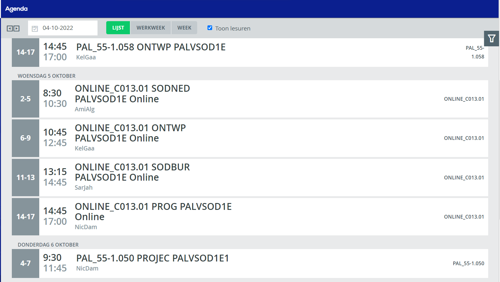

Eduarte is een app die je kan downloaden op elke apparaat in de playstore, appstore enzv. In Eduarte zit jouw school rooster, resultaten,beichten en werklijst. Je kan ook zien van welke docent je les krijgt in welke lokaal je moet zijn en hoelaat je uit bent. Dus je hebt het altijd Eduarte nodig
